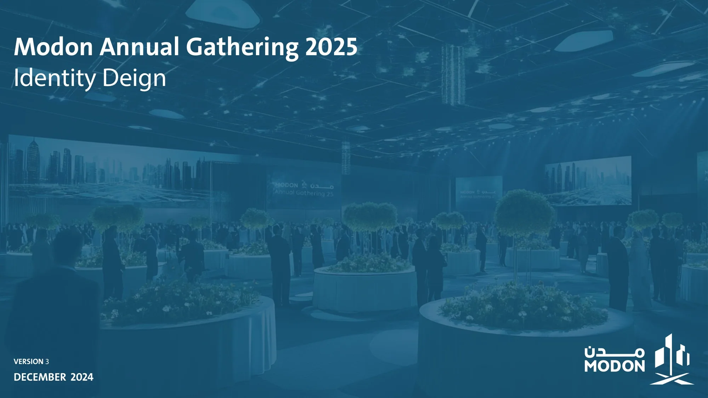
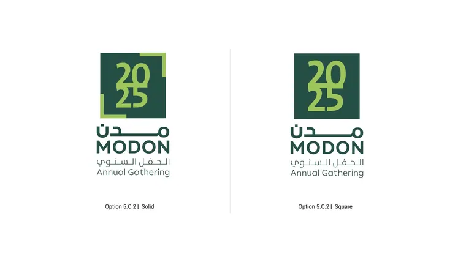
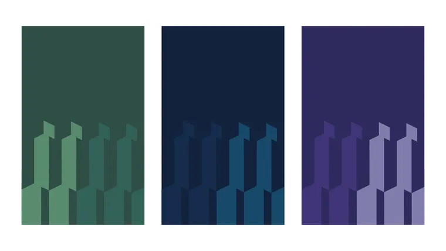
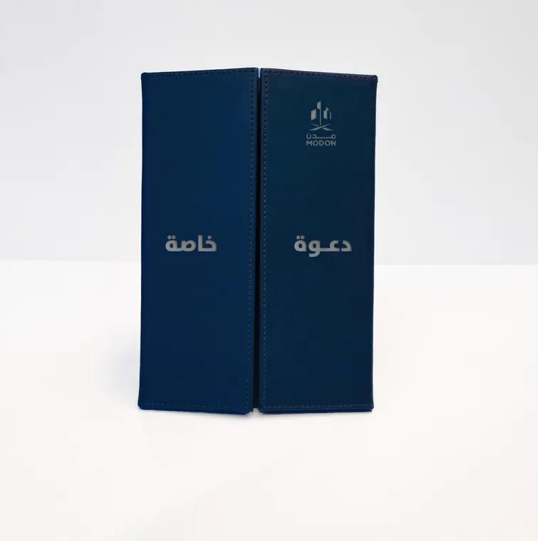
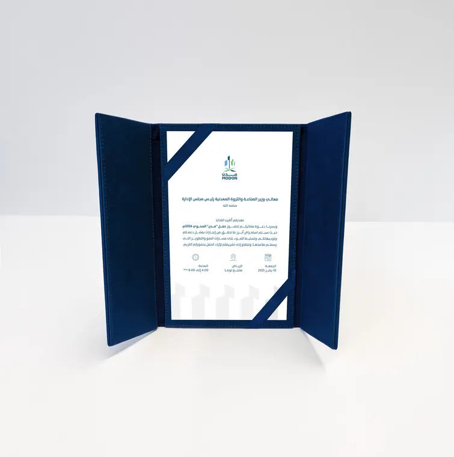
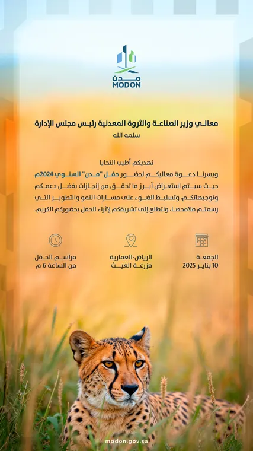
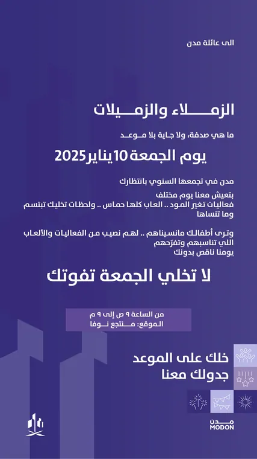
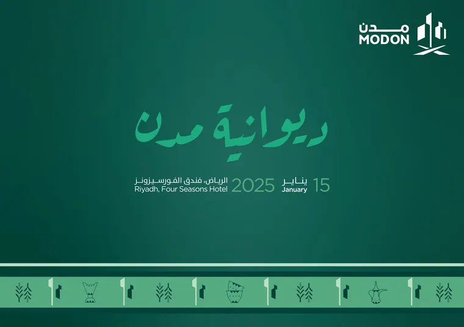
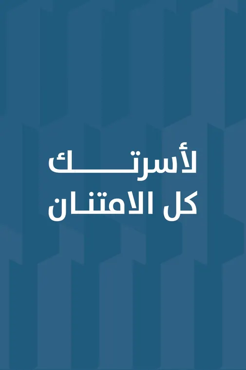
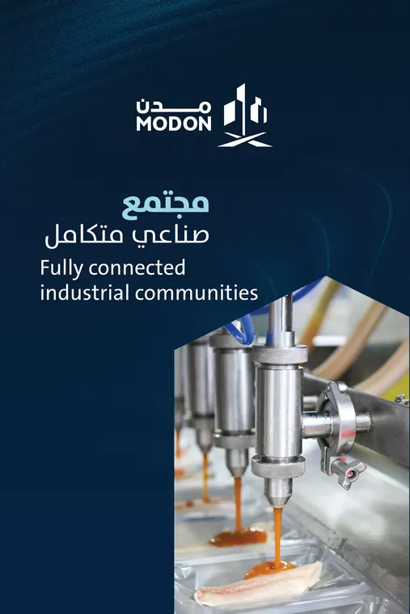

MODON Annual Gathering 2025
One night, one identity.
The identity for MODON’s annual staff gathering: a 2025 mark in four colourways, a facet pattern drawn from the MODON skyline, invitations and a boxed invitation, announcements for email and screens, a Diwaniya theme and thank-you cards for employees’ families.
- Client
- MODON
- Role
- Event identity and design
- Scope
- Logo, pattern, invitations, screens, cards









